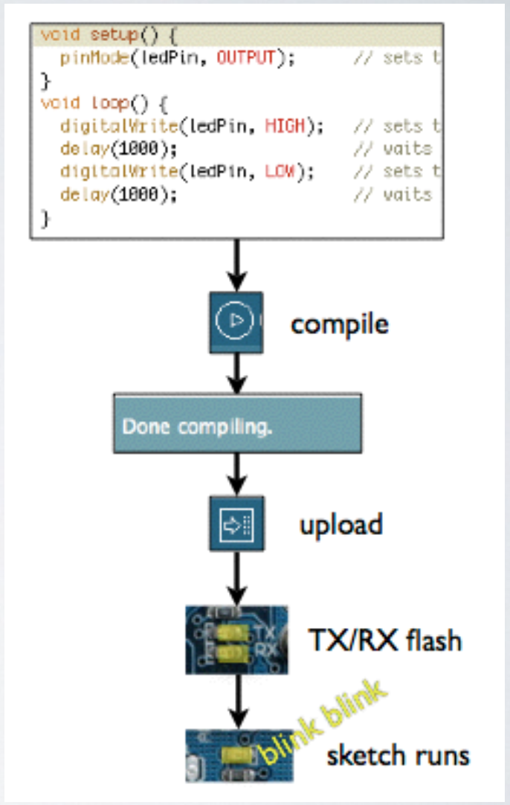
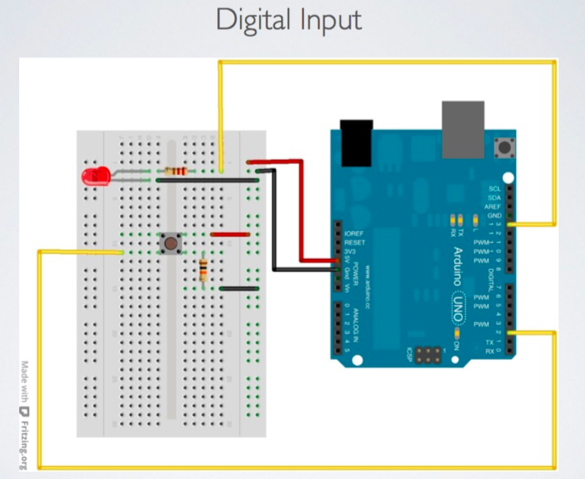
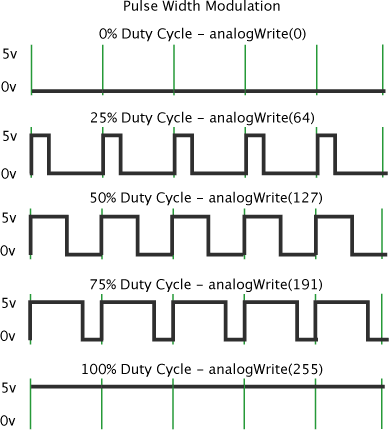
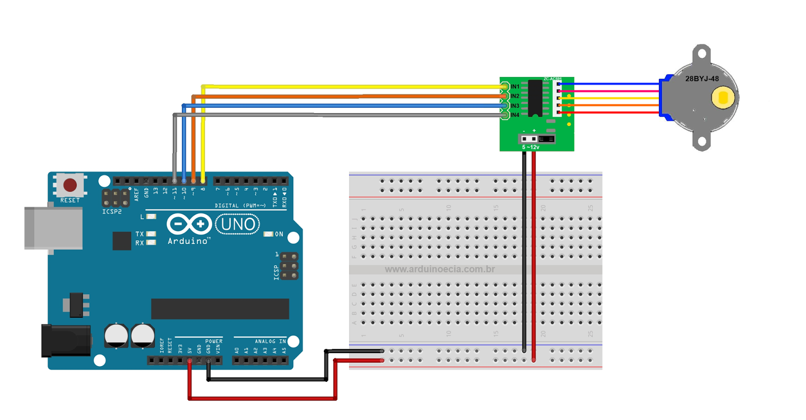

AAU:Physical Interactive Systems Day 2
AAU:Physical Interactive Systems Day 2
AAU:Physical Interactive Systems Day 2
AAU:Physical Interactive Systems Day 2
Slides are here:
https://mhellar.github.io/saam_mcu/day1
- Getting to a known good state
- Digital Output Review
- Digital Input
- Brainstorming for the mideterm
- Analog Input and Output
- Introduction to serial communication
- Controlling motion with servos and stepper motors
- Case study: RV (Room Vehicle) PROTOTYPE, Greg Lynn
Topics for Today:
Getting to a known good state: BLINKING AN LED

Parts List:
- 1 long green wire
- 1 long yellow wire
- 1 Led(your choice of color)
- 1 resistor (bands are red,red,violet, gold)
- 1 Breadboard
- 1 Arduino and USB cable
- *Most of the parts from exercise 1
1 Connect GND on the arduino to the ground terminal on the breadboard


2 Connect Pin 13 on the to the same row as the long lead of the LED on the breadboard
3 Make a connection between the ground strip and the short lead of the LED
Once the LED is connected, you need to tell Arduino what to do. This is done through code - that is, a list of instructions that we give the micro- controller to make it do what we want.
THE ARDUINO IDE
Open the Arduino IDE from the Applications folder.
THE ARDUINO IDE

Blink Code
// Example 01 : Blinking LED
int LED = 13; // LED connected to digital pin 13
void setup()
{
pinMode(LED, OUTPUT); // sets the digital
// pin as output
}
void loop()
{
digitalWrite(LED, HIGH); // turns the LED on
delay(1000); // waits for a second
digitalWrite(LED, LOW); // turns the LED off
delay(1000); // waits for a second
}
USING ARDUINO
- Write your sketch
- Press Compile button (to check for errors)
- Press Upload button to program Arduino board with your sketch
CODE:STEP BY STEP
Arduino expects two functions to exists—one called
setup() and one called loop().
setup() is where you put all the code that you want to execute once at the beginning of your
program
loop() contains the core of your program, which is executed over and over again.
When you power up the board, the code runs; when you want to stop, you just turn it off.
// Example 01 : Blinking LED()
A comment is a useful way for us to write little notes.
The
preceding title comment just reminds us that this program, Example 01, blinks an LED.
void setup()
This line tells Arduino that the next function will be called setup().
pinMode(LED, OUTPUT); // sets the digital // pin as output
pinMode tells Arduino how to configure a certain pin. Digital pins can be used either as INPUT or OUTPUT.
In this case, we need an output pin to control our LED, so we place the number of the pin and its mode inside the parentheses.
pinMode is a function, and the words (or numbers) specified inside the parentheses are arguments. INPUT and OUTPUT are constants in the Arduino language. }
loop() is where you specify the main behavior of your interactive device. It will be repeated over and over again until you switch the board off.
digitalWrite(LED, HIGH); // turns the LED on
As the comment says, digitalWrite() is able to turn on (or off) any pin that has been
configured
as an OUTPUT.
The first argument (in this case, LED) specifies which pin should be turned on or off
(remember
that LED is a constant value that refers to pin 13, so this is the pin that’s switched).
The second argument can turn the pin on (HIGH) or off (LOW).
Imagine that every output pin is a tiny power socket, like the ones you have on the walls of your
apartment. American ones
are 110 V, and Arduino works at a more modest 5 V.
The magic here is when software becomes hardware. When you write digitalWrite(LED, HIGH),
it
turns the output pin to 5 V, and if you connect an LED, it will light up.
So at this point in your code, an instruction in software makes something happen in the
physical
world by controlling the flow of electricity to the pin. Turning on and off the pin at will now let
us
translate these into something more visible for a human being; the LED is our actuator
delay(1000); // wait for a second
Arduino has a very basic structure. Therefore, if
you
want things to happen with a certain regularity, you tell it to sit quietly and do nothing until it
is
time to go to the next step. delay() basically makes the processor sit there and do nothing for the
amount
of milliseconds that you pass as an argument. Milliseconds are thousands of seconds; therefore,
1000
milliseconds equals 1 second. So the LED stays on for one second here.
digitalWrite(LED, LOW); // turns the LED off
This instruction now turns off the LED
that
we previously turned on. Why do we use HIGH and LOW? Well, it’s an old convention in digital
electronics.
HIGH means that the pin is on, and in the case of Arduino, it will be set at 5 V. LOW means 0 V.
You
can also replace these arguments mentally with ON and OFF.
delay(1000); // wait for a second
Here, we delay for another second. The LED will be
off
for one second.
}
This closing curly bracket marks end of the loop function.
Random Blink
//Random Delay
//
int LED = 13; // LED connected to// digital pin 13
int i; // Variable to hold our random value
void setup()
{
pinMode(LED, OUTPUT); // sets the digital pin as
output
}
void loop()
{
i = random(1, 1000); // generate a random value every
loop cycle
digitalWrite(LED, HIGH); // turns the LED on
delay(i); // pause for the duration of variable i
digitalWrite(LED, LOW); // turns the LED off
delay(i); // waits for a second the duration of
variable i
}
ITERATIVE DELAY
/// Blink with for loop
//
int LED = 13; // LED connected to digital pin 13
int i; // Variable to hold our random value
void setup()
{
pinMode(LED, OUTPUT); // sets the digital
// pin as output
}
void loop()
{
// set I to 1; while i is less that 100 increment i by one
for(int i = 1;i <=100; i++){
digitalWrite(LED, HIGH); // turns the LED on
delay(i); // set delay based on the value of i
digitalWrite(LED, LOW); // turns the LED off
delay(i); // set delay based on the value of i
}
}
Knight Rider

Knight Rider
Parts List:
- Solderless Breadboard
- 13 x Flexible Wire Jumpers
- 6 x LEDs (any color)
- 6 x 220 Ohm Resistors
- Arduino Duo board
- 1 Arduino and USB cable
Knight Rider
Storytelling through playful interactions from Dalziel & Pow on Vimeo.
Digital Input
Parts for this project:
- Solderless Breadboard
- 7 x Flexible Wire Jumpers - 1 x LEDs (any color)
- 2 x 220 Ohm Resistors
- 1 xTactile Pushbutton
- Arduino Duo board
- USB Cable


Button.ino



Analog Input

Parts for this project:
- Solderless Breadboard
- 8 x Flexible Wire Jumpers
- 1 x RGB LED
- 3 x 220 Ohm Resistors
- 1 x Blue Potentiometer with white knob
- Arduino Duo board
- USB Cable
The Potentiometer

The Circuit
- Connect 5V and GND to the side strips
- Connect the short leads of the LED to pins 9,10,11 in series with a resistor.
Upload 'RBG_Pot.ino'


video
Upload 'SerialMath.ino'
int a = 5;
int b = 10;
int c = 20;
void setup() // run once, when the sketch starts
{
Serial.begin(9600); // set up Serial library at 9600 bps
Serial.println("Here is some math: ");
Serial.print("a = ");
Serial.println(a);
Serial.print("b = ");
Serial.println(b);
Serial.print("c = ");
Serial.println(c);
Serial.print("a + b = "); // add
Serial.println(a + b);
Serial.print("a * c = "); // multiply
Serial.println(a * c);
Serial.print("c / b = "); // divide
Serial.println(c / b);
Serial.print("b - c = "); // subtract
Serial.println(b - c);
}
void loop() // we need this to be here even though its empty
{
}
WE can send Serial data as well
Upload PhysicalPixel.ino
const int redPin = 9; // the pin that the LED is attached to
const int bluePin = 10; // the pin that the LED is attached to
const int greenPin = 11; // the pin that the LED is attached to
int incomingByte; // a variable to read incoming serial data into
void setup() {
// initialize serial communication:
Serial.begin(9600);
// initialize the LED pin as an output:
pinMode(redPin, OUTPUT);
pinMode(bluePin, OUTPUT);
pinMode(greenPin, OUTPUT);
}
void loop() {
// see if there's incoming serial data:
if (Serial.available() > 0) {
// read the oldest byte in the serial buffer:
incomingByte = Serial.read();
// if it's a r , turn on the red LED:
if (incomingByte == 'r') {
digitalWrite(greenPin, LOW);
digitalWrite(bluePin, LOW);
digitalWrite(redPin, HIGH);
}
// if it's a g , turn on the green LED:
if (incomingByte == 'g') {
digitalWrite(greenPin, HIGH);
digitalWrite(bluePin, LOW);
digitalWrite(redPin, LOW);
}
/ if it's a b , turn on the blue LED:
if (incomingByte == 'b') {
digitalWrite(greenPin, LOW);
digitalWrite(bluePin, HIGH);
digitalWrite(redPin, LOW);
}
}
}
Controlling a Servo

Servo_Sweep.ino
#include
Servo myservo; // create servo object to control a servo
// a maximum of eight servo objects can be created
int pos = 0; // variable to store the servo position
void setup() {
myservo.attach(9); // attaches the servo on pin 9 to the servo object }
void loop() {
for(pos = 0; pos < 180; pos += 1) // goes from 0 degrees to 180 degrees
}
{ myservo.write(pos); delay(15);
// in steps of 1 degree
// tell servo to go to position in variable 'pos'
// waits 15ms for the servo to reach the position
}
for(pos = 180; pos>=1; pos-=1) // goes from 180 degrees to 0 degrees
{
myservo.write(pos); // tell servo to go to position in variable 'pos'
delay(15); // waits 15ms for the servo to reach the position
}
Servo With Potentiometer

Upload SERVO_KNOB.INO
try SerialServoControl
Stepper Motors

Stepper Motors

Stepper Motors
Upload 'Stepper.ino'
Worth a look
Accelstepper